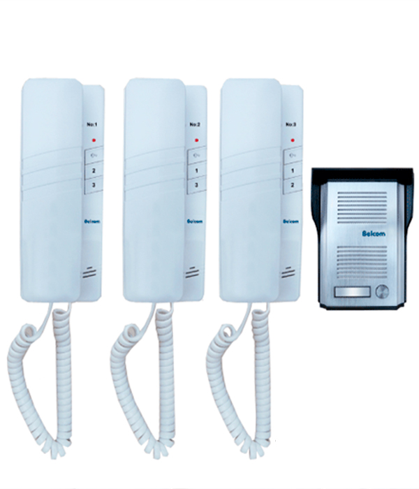

{kind=link}
{kind=link}
{kind=link}
{kind=link}
COMMAX
Seguridad y Vigilancia
HIKVISION
Seguridad y Vigilancia
BELCOM
Seguridad y Vigilancia
FERMAX
Seguridad y Vigilancia.
BTICINO
Seguridad y Vigilancia .

YUS
Seguridad y Vigilancia .
SOLUCIONES INTELIGENTES PARA EDIFICIOS ( AUDIO Y VIDEO )

Portero 12 puntos para empotrar. Cuenta con sensor para la iluminación del panel. Utiliza fuente de 12v. Modelo PE-0760.

Portero de 16 puntos para empotrar. Cuenta con sensor para la iluminación del panel. Utiliza fuente de 12v. Modelo PE-0760.
INTERCOMUNICADOR
BELCOM ( MODELO: PE 2102 )
Intercomunicador 1 Punto
Tipo de montaje Empotrado
Manual y kit de fijación.
Portero e Intercomunicador
Cerradura Max. 30 Mts.

INTERCOMUNICADOR
BELCOM (PE-1929 )
Intercomunicador 2 Puntos.
Portero Aluminio Empotrar.
Comunicación Interna
Doble Sonido.
Distancia Máxima 80 Mts.
Cerradura Max. 30 Mts.

INTERCOMUNICADOR
BELCOM (PE-2703 )
Intercomunicador 3 Puntos.
Portero Aluminio Empotrar.
Comunicación Interna
Doble Sonido.
Distancia Máx 80Mts.
Activa Cerradura 30Mts.

INTERCOMUNICADOR
BELCOM (PE-1929 )
Intercomunicador 3 Puntos.
Portero de Aluminio para Empotrar.
Comunicación Interna
Doble Sonido Interno y Externo.
Distancia Máxima de 80 Mts.
Activa Cerradura Eléctrica Max. 30 Mts.
INTERCOMUNICADOR
BELCOM (PE-1929 )
Intercomunicador 3 Puntos.
Portero de Aluminio para Empotrar.
Comunicación Interna
Doble Sonido Interno y Externo.
Distancia Máxima de 80 Mts.
Activa Cerradura Eléctrica Max. 30 Mts.
Soluciones de Seguridad en Audio y Vídeo
LINEA CASA / CON AUDIO
Portero con cámara Pinhole Directo a 220v conexión con 2 porteros, 2 monitores, 1 intercom Comunicación interna Activa cerradura electrica con transformado de 12v-18v.
 Equipo Video Portero 4.3" PE-7643
Equipo Video Portero 4.3" PE-7643
CASA EDIFICO / CON AUDIO
Kit de videoportero ip. incluye cámara modelo ds-kd8003, monitor touch modelo ds-kh6320, switch poe de 4ch, memoria micro sd de 16gb y fuente de poder 220v.
 Vídeo Portero IP HK-DS-KIS602
Vídeo Portero IP HK-DS-KIS602
LINEA CASA / AUDIO Y VIDEO
Un Videoportero es un sistema autónomo que sirve para gestionar las llamadas que se hacen en la puerta de un edificio (sea complejo residencial, vivienda unifamilia
 Vídeo Portero 4.3" PE-7643
Vídeo Portero 4.3" PE-7643
VIDEO PORTERO LINEA OFICINA
Un Videoportero es un sistema autónomo que sirve para gestionar las llamadas que se hacen en la puerta de un edificio (sea complejo residencial, vivienda unifamilia
 Vídeo Portero 4.3" PE-7643
Vídeo Portero 4.3" PE-7643